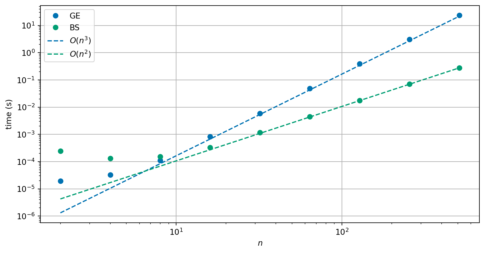
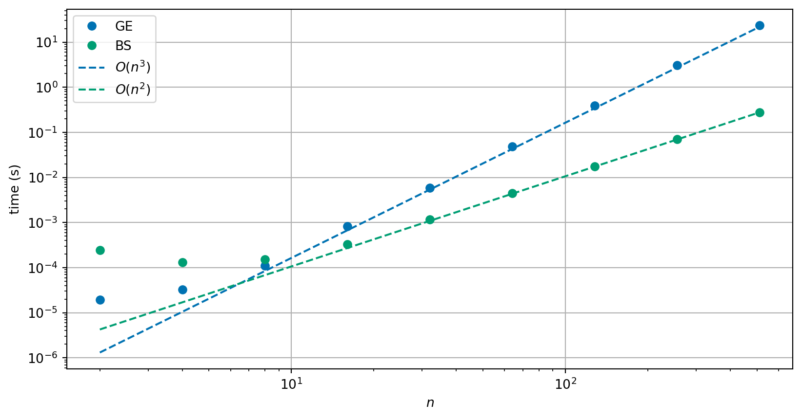

Direct solvers for systems of linear equations
Module learning objective
Apply direct and iterative solvers to solve systems of linear equations; implement methods using floating point numbers and investigate computational cost using computer experiments.
Chapter 4
Recall the problem is to solve a set of \(n\) linear equations for \(n\) unknown values \(x_j\), for \(j=1, 2, \ldots, n\).
Notation:
\[\begin{align*} \text{Equation } 1: && a_{11} x_1 + a_{12} x_2 + a_{13} x_3 + \cdots + a_{1n} x_n & = b_1 \\ \text{Equation } 2: && a_{21} x_1 + a_{22} x_2 + a_{23} x_3 + \cdots + a_{2n} x_n & = b_2 \\ \vdots \\ \text{Equation } i: && a_{i1} x_1 + a_{i2} x_2 + a_{i3} x_3 + \cdots + a_{in} x_n & = b_i \\ \vdots \\ \text{Equation } n: && a_{n1} x_1 + a_{n2} x_2 + a_{n3} x_3 + \cdots + a_{nn} x_n & = b_n. \end{align*}\]
We can also write the system of linear equations in general matrix-vector form:
\[ \begin{pmatrix} a_{11} & a_{12} & a_{13} & \cdots & a_{1n} \\ a_{21} & a_{22} & a_{23} & \cdots & a_{2n} \\ a_{31} & a_{32} & a_{33} & \cdots & a_{3n} \\ \vdots & \vdots & \vdots & & \vdots \\ a_{n1} & a_{n2} & a_{n3} & \cdots & a_{nn} \end{pmatrix} \begin{pmatrix} x_1 \\ x_2 \\ x_3 \\ \vdots \\ x_n \end{pmatrix} = \begin{pmatrix} b_1 \\ b_2 \\ b_3 \\ \vdots \\ b_n \end{pmatrix}. \]
The general matrix \(A\) before the examples is known as a full matrix: any of its components \(a_{ij}\) might be nonzero.
One common (and important) structure takes the form
\[ A = \begin{pmatrix} a_{11} & 0 & 0 & \cdots & 0 \\ a_{21} & a_{22} & 0 & \cdots & 0 \\ a_{31} & a_{32} & a_{33} & \cdots & 0 \\ \vdots & \vdots & \vdots & \ddots & \vdots \\ a_{n1} & a_{n2} & a_{n3} & \cdots & a_{nn} \end{pmatrix}. \]
A is a lower triangular matrix. Every entry above the leading diagonal is zero:
\[ a_{ij} = 0 \quad \text{ for } \quad j > i. \]
The transpose of this matrix is an upper triangular matrix and can be treated in a very similar manner.
Note that the determinant of a triangular matrix is simply the product of diagonal coefficients: \[ \det A = a_{11} a_{22} \cdots a_{nn} = \prod_{i=1}^n a_{ii}. \]
A general lower triangular system of equations has \(a_{ij} = 0\) for \(j > i\) and takes the form:
\[ \begin{pmatrix} a_{11} & 0 & 0 & \cdots & 0 \\ a_{21} & a_{22} & 0 & \cdots & 0 \\ a_{31} & a_{32} & a_{33} & \cdots & 0 \\ \vdots & \vdots & \vdots & \ddots & \vdots \\ a_{n1} & a_{n2} & a_{n3} & \cdots & a_{nn} \end{pmatrix} \begin{pmatrix} x_1 \\ x_2 \\ x_3 \\ \vdots \\ x_n \end{pmatrix} = \begin{pmatrix} b_1 \\ b_2 \\ b_3 \\ \vdots \\ b_n \end{pmatrix}. \]
Note that first equation is
\[ a_{11} x_1 = b_1. \]
Then \(x_i\) can be found by calculating
\[ x_i = \frac{1}{a_{ii}} \left(b_i - \sum_{j=1}^{i-1} a_{ij} x_j \right) \]
for each row \(i = 1, 2, \ldots, n\) in turn.
Solve the lower triangular system of equations given by
\[ \begin{aligned} 2 x_1 && && &= 2 \\ x_1 &+& 2 x_2 && &= 7 \\ 2 x_1 &+& 4 x_2 &+& 6 x_3 &= 26 \end{aligned} \]
or, equivalently,
\[ \begin{pmatrix} 2 & 0 & 0 \\ 1 & 2 & 0 \\ 2 & 4 & 6 \end{pmatrix} \begin{pmatrix} x_1 \\ x_2 \\ x_3 \end{pmatrix} = \begin{pmatrix} 2 \\ 7 \\ 26 \end{pmatrix}. \]
Solve the upper triangular linear system given by
\[ \begin{aligned} 2 x_1 &+& x_2 &+& 4 x_3 &=& 12 \\ && 1.5 x_2 && &=& 3 \\ && && 2 x_3 &=& 4 \end{aligned}. \]
It is simple to solve a lower (upper) triangular system of equations (provided the diagonal is non-zero).
This process is often referred to as forward (backwards) substitution.
We start with some helper code which determines the size of the system we are working with:
We can define functions to solve both upper and lower triangular form systems of linear equations:
Recall that the \(n \times n\) matrix \(A\) represents the coefficients that multiply the unknowns in each equation (row), while the \(n\)-vector \(\vec{b}\) represents the right-hand-side values.
Our strategy will be to reduce the system to a triangular system of matrices, which is then easy to solve!
Consider equation \(p\) of the above system:
\[ a_{p1} x_1 + a_{p2} x_2 + a_{p3} x_3 + \cdots + a_{pn} x_n = b_p, \]
and equation \(q\):
\[ a_{q1} x_1 + a_{q2} x_2 + a_{q3} x_3 + \cdots + a_{qn} x_n = b_q. \]
Note three things…
Consider equation \(p\) of the above system:
\[ a_{p1} x_1 + a_{p2} x_2 + a_{p3} x_3 + \cdots + a_{pn} x_n = b_p, \]
and equation \(q\):
\[ a_{q1} x_1 + a_{q2} x_2 + a_{q3} x_3 + \cdots + a_{qn} x_n = b_q. \]
Consider equation \(p\) of the above system:
\[ a_{p1} x_1 + a_{p2} x_2 + a_{p3} x_3 + \cdots + a_{pn} x_n = b_p, \]
and equation \(q\):
\[ a_{q1} x_1 + a_{q2} x_2 + a_{q3} x_3 + \cdots + a_{qn} x_n = b_q. \]
We can multiply any equation by an arbitrary real number (\(k \neq 0\) say):
\[ k a_{p1} x_1 + k a_{p2} x_2 + k a_{p3} x_3 + \cdots + k a_{pn} x_n = k b_p. \]
Consider equation \(p\) of the above system:
\[ a_{p1} x_1 + a_{p2} x_2 + a_{p3} x_3 + \cdots + a_{pn} x_n = b_p, \]
and equation \(q\):
\[ a_{q1} x_1 + a_{q2} x_2 + a_{q3} x_3 + \cdots + a_{qn} x_n = b_q. \]
\[ (a_{p1} + a_{q1}) x_1 + (a_{p2} + a_{q2}) x_2 + \cdots + (a_{pn} + a_{qn}) x_n = b_p + b_q. \]
Consider the system \[\begin{align} 2 x_1 + 3 x_2 & = 4 \label{eq:eg1a} \\ -3 x_1 + 2 x_2 & = 7 \label{eq:eg1b}. \end{align}\]
Consider the system \[\begin{align} x_1 + 2 x_2 & = 1 \label{eq:eg2a} \\ 4 x_1 + x_2 & = -3 \label{eq:eg2b}. \end{align}\] Work out the result of these elementary row operations: \[\begin{align*} 2 \times \text{\eqref{eq:eg2a}} & \rightarrow \\ 0.25 \times \text{\eqref{eq:eg2b}} & \rightarrow \\ \text{\eqref{eq:eg2b}} + (-1) \times \text{\eqref{eq:eg2a}} & \rightarrow \\ \text{\eqref{eq:eg2b}} + (-4) \times \text{\eqref{eq:eg2a}} & \rightarrow \end{align*}\]
Our strategy for solving systems of linear equations using Gaussian elimination is based on the following ideas:
The three types of operation described above are called elementary row operations (ERO).
We will apply a sequence of ERO to reduce an arbitrary system to a triangular form, which, we will see, can be easily solved.
The algorithm for reducing a general matrix to upper triangular form is known as forward elimination or (more commonly) as Gaussian elimination.
The method is so old, in fact we have evidence of Chinese mathematicians using Gaussian elimination in 179CE (From Wikipedia):
The method of Gaussian elimination appears in the Chinese mathematical text Chapter Eight: Rectangular Arrays of The Nine Chapters on the Mathematical Art. Its use is illustrated in eighteen problems, with two to five equations. The first reference to the book by this title is dated to 179 CE, but parts of it were written as early as approximately 150 BCE. It was commented on by Liu Hui in the 3rd century.
The following algorithm systematically introduces zeros into the system of equations, below the diagonal.
After row \(n-1\) all entities below the diagonal have been eliminated, so \(A\) is now upper triangular and the resulting system can be solved by backward substitution.
Use Gaussian elimination to reduce the following system of equations to upper triangular form:
\[ \begin{pmatrix} 2 & 1 & 4 \\ 1 & 2 & 2 \\ 2 & 4 & 6 \end{pmatrix} \begin{pmatrix} x_1 \\ x_2 \\ x_3 \end{pmatrix} = \begin{pmatrix} 12 \\ 9 \\ 22 \end{pmatrix}. \]
Use Gaussian elimination to reduce the following system of linear equations to upper triangular form.
\[ \begin{pmatrix} 4 & -1 & -1 \\ 2 & 4 & 2 \\ 1 & 2 & 4 \end{pmatrix} \begin{pmatrix} x_1 \\ x_2 \\ x_3 \end{pmatrix} = \begin{pmatrix} 9 \\ -6 \\ 3 \end{pmatrix}. \]
The key idea is that:
Each row \(i\) is used to eliminate the entries in column \(i\) below \(a_{ii}\), i.e. it forces \(a_{ji} = 0\) for \(j > i\).
The elimination is done by subtracting a multiple of row \(i\) from row \(j\):
\[ (\text{row } j) \leftarrow (\text{row } j) - \frac{a_{ji}}{a_{ii}} (\text{row } i). \]
Now we can define our Gaussian elimination function. We update the values in-place to avoid extra memory allocations.
We can try our code on Example 1:
Our grand strategy can now come together so we have a method to solve systems of linear equations:
Given a system of linear equations \(A\vec{x} = \vec{b}\);
We can use our code to test this:
Use Gaussian elimination followed by backwards elimination to solve the system: \[\begin{equation*} \begin{pmatrix} 2 & 1 & -1 \\ 4 & 5 & 7 \\ -8 & -3 & 3 \end{pmatrix} \begin{pmatrix} x_1 \\ x_2 \\ x_3 \end{pmatrix} = \begin{pmatrix} 6 \\ 30 \\ -22 \end{pmatrix}. \end{equation*}\]
Gaussian elimination (GE) is unnecessarily expensive when it is applied to many systems of equations with the same matrix \(A\) but different right-hand sides \(\vec{b}\).

Recall the elementary row operations (EROs) from above. Note that the EROs can be produced by left multiplication with a suitable matrix:
Row swap:
\[ \begin{pmatrix} 1 & 0 & 0 \\ 0 & 0 & 1 \\ 0 & 1 & 0 \end{pmatrix} \begin{pmatrix} a & b & c \\ d & e & f \\ g & h & i \end{pmatrix} = \begin{pmatrix} a & b & c \\ g & h & i \\ d & e & f \end{pmatrix} \]
Row swap:
\[ \begin{pmatrix} 1 & 0 & 0 & 0 \\ 0 & 0 & 1 & 0 \\ 0 & 1 & 0 & 0 \\ 0 & 0 & 0 & 1 \end{pmatrix} \begin{pmatrix} a & b & c & d \\ e & f & g & h \\ i & j & k & l \\ m & n & o & p \end{pmatrix} = \begin{pmatrix} a & b & c & d \\ i & j & k & l \\ e & f & g & h \\ m & n & o & p \end{pmatrix} \]
Multiply row by \(\alpha\):
\[ \begin{pmatrix} \alpha & 0 & 0 \\ 0 & 1 & 0 \\ 0 & 0 & 1 \end{pmatrix} \begin{pmatrix} a & b & c \\ d & e & f \\ g & h & i \end{pmatrix} = \begin{pmatrix} \alpha a & \alpha b & \alpha c \\ d & e & f \\ g & h & i \end{pmatrix} \]
\(\alpha \times \text{row } p + \text{row } q\):
\[ \begin{pmatrix} 1 & 0 & 0 \\ 0 & 1 & 0 \\ \alpha & 0 & 1 \end{pmatrix} \begin{pmatrix} a & b & c \\ d & e & f \\ g & h & i \end{pmatrix} = \begin{pmatrix} a & b & c \\ d & e & f \\ \alpha a + g & \alpha b + h & \alpha c + i \end{pmatrix} \]
Since Gaussian elimination (GE) is just a sequence of EROs and each ERO is just multiplication by a suitable matrix, say \(E_k\), forward elimination applied to the system \(A \vec{x} = \vec{b}\) can be expressed as \[ (E_m \cdots E_1) A \vec{x} = (E_m \cdots E_1) \vec{b}, \] here \(m\) is the number of EROs required to reduce the upper triangular form.
Let \(U = (E_m \cdots E_1) A\) and \(L = (E_m \cdots E_1)^{-1}\). Now the original system \(A \vec{x} = \vec{b}\) is equivalent to
\[\begin{equation} \label{eq:LU} L U \vec{x} = \vec{b} \end{equation}\]
where \(U\) is upper triangular (by construction) and \(L\) may be shown to be lower triangular (provided the EROs do not include any row swaps).
Once \(L\) and \(U\) are known it is easy to solve \(\eqref{eq:LU}\)
\(L\) and \(U\) may be found in \(O(n^3)\) operations by performing GE and saving the \(E_i\) matrices: however, it is more convenient to find them directly (also \(O(n^3)\) operations).
Consider the following linear system of equations
\[ \begin{pmatrix} 0 & 2 & 1 \\ 2 & 1 & 0 \\ 1 & 2 & 0 \end{pmatrix} \begin{pmatrix} x_1 \\ x_2 \\ x_3 \end{pmatrix} = \begin{pmatrix} 7 \\ 4 \\ 5 \end{pmatrix} \]
Consider another system of equations
\[ \begin{pmatrix} 2 & 1 & 1 \\ 4 & 2 & 1 \\ 2 & 2 & 0 \end{pmatrix} \begin{pmatrix} x_1 \\ x_2 \\ x_3 \end{pmatrix} = \begin{pmatrix} 3 \\ 5 \\ 2 \end{pmatrix} \]
In general, Gaussian elimination requires row swaps to avoid breaking down when there is a zero in the “pivot” position.
Avoiding zero-division might be a familiar aspect of Gaussian elimination, but there is an additional reason to apply pivoting when working with floating point numbers:
Consider using Gaussian elimination to solve the linear system of equations given by
\[ \begin{pmatrix} \varepsilon & 1 \\ 1 & 1 \end{pmatrix} \begin{pmatrix} x_1 \\ x_2 \end{pmatrix} = \begin{pmatrix} 2 + \varepsilon \\ 3 \end{pmatrix} \]
where \(\varepsilon \neq 1\).
Use Gaussian elimination to solve the linear system of equations given by
\[ \begin{pmatrix} 1 & 1 \\ \varepsilon & 1 \end{pmatrix} \begin{pmatrix} x_1 \\ x_2 \end{pmatrix} = \begin{pmatrix} 3 \\ 2 + \varepsilon \end{pmatrix} \]
where \(\varepsilon \neq 1\).
This is a genuine problem we see in the code versions too!
without row swapping:
eps=1.0e-02, x.T = [ 1.0, 2.0 ], Solution? True
eps=1.0e-04, x.T = [ 1.0, 2.0 ], Solution? True
eps=1.0e-06, x.T = [ 1.0, 2.0 ], Solution? True
eps=1.0e-08, x.T = [ 1.0, 2.0 ], Solution? True
eps=1.0e-10, x.T = [ 1.0, 2.0 ], Solution? True
eps=1.0e-12, x.T = [ 1.00009, 2.00000 ], Solution? False
eps=1.0e-14, x.T = [ 1.0214, 2.0000 ], Solution? False
with row swapping:
eps=1.0e-02, x.T = [ 1.0, 2.0 ], Solution? True
eps=1.0e-04, x.T = [ 1.0, 2.0 ], Solution? True
eps=1.0e-06, x.T = [ 1.0, 2.0 ], Solution? True
eps=1.0e-08, x.T = [ 1.0, 2.0 ], Solution? True
eps=1.0e-10, x.T = [ 1.0, 2.0 ], Solution? True
eps=1.0e-12, x.T = [ 1.0, 2.0 ], Solution? True
eps=1.0e-14, x.T = [ 1.0, 2.0 ], Solution? True
Writing the equations in a different order has removed the previous problem.
The diagonal entries are now always relatively larger.
The interchange of the order of equations is a simple example of row pivoting. This strategy avoids excessive rounding errors in the computations.
Key idea:
Before eliminating entries in column \(j\):
Then eliminate column \(j\) as before.
Consider the linear system of equations given by
\[ \begin{pmatrix} 10 & -7 & 0 \\ -3 & 2.1 - \varepsilon & 6 \\ 5 & -1 & 5 \end{pmatrix} \begin{pmatrix} x_1 \\ x_2 \\ x_3 \end{pmatrix} = \begin{pmatrix} 7 \\ 9.9 + \varepsilon \\ 11 \end{pmatrix} \]
where \(0 \le \varepsilon \ll 1\), and solve it using
Gaussian elimination without pivoting
Gaussian elimination with pivoting.
The exact solution is \(\vec{x} = (0, -1, 2)^T\) for any \(\varepsilon\) in the given range.
Gaussian elimination without pivoting following by back subsitution:
Gaussian elimination with pivoting following by back subsitution: